Dual Super-Resolution Learning for Semantic Segmentation
代码链接： https://github.com/wanglixilinx/DSRL
参考博客：https://blog.csdn.net/weixin_42096202/article/details/106843395
Contribution
- 提出了一个双超分辨率学习框架来保持高分辨率的表示，可以在保持推理速度的同时提高性能。
- 验证了DSRL框架的通用性，它可以很容易地扩展到其他需要高分辨率表示的任务，如人体姿态估计。
- 证明了该方法在语义分割和人体姿态估计方面的有效性。在同样的计算量下，能提升≥2%的精度，在同等表现下减少FLOPs。
Proposed Approach
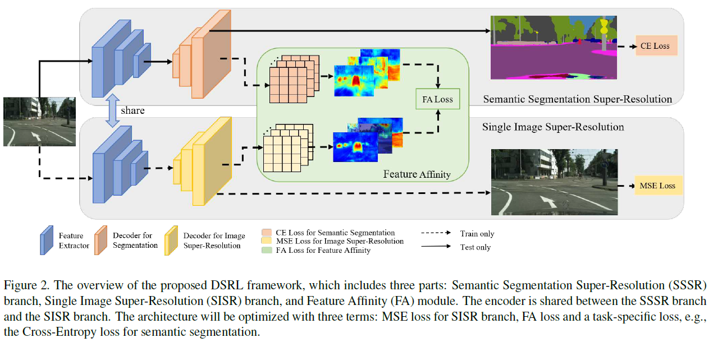
双分支超分辨率学习（DSRL）结构如上图所示。可以看出，两个分支网络分别为SSSR与SISR，这俩共享Encoder结构。然后使用各自的Decoder分别输出语义分割的预测结果和图像超分辨率结果。FA主要用于增强两个分支特征的一致性。接下来将具体介绍体系结构的三个部分：
（a）语义分割超分辨率（SSSR）；
（b）单图像超分辨率（SISR）；
（c）特征相似度（FA）模块。
Dual Super-Resolution Learning
Semantic Segmentation Super-Resolution
对于语义分割，我们只需附加一个额外的上采样模块来生成最终的预测掩码，整个过程称为语义分割超分辨率(SSSR)。如图4所示，输入512×1024，将生成1024×2048的输出，是输入图像的两倍。相比于目前大多数的语义分割系统，他们预测一个512×1024的mask来进行训练和测试(后处理阶段再缩放到1024×2048)，这篇方法可以充分利用gt，避免预处理造成有效的标签信息损失。额外的语义分割上采样模块由一堆反卷积层组成，接着是BatchNorm层和ReLU层，它只需要较少的参数。
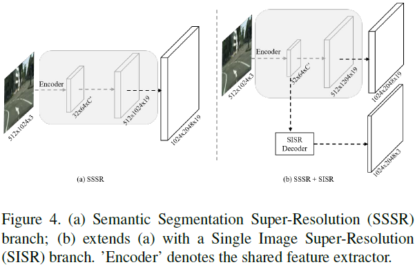
Single Image Super-Resolution
仅依靠解码器模块不足以恢复以原始图像为输入得到的类似的高分辨率语义特征表示。由于解码器是双线性上采样层或简单的子网络，它不会带来任何额外的信息，因为输入是低分辨率的(例如512×1024)。SISR的目标是从低分辨率输入构建高分辨率图像。这意味着SISR可以在低分辨率输入下有效地重构图像的细粒度结构信息，这对于语义分割总是很有帮助的。为了更好地理解，图3中可视化了SSSR和SISR的特性。通过比较图3中的(b)和(c)，可以很容易地发现SISR包含了更完整的对象结构。虽然这些结构并没有明确地表示类别，但可以根据像素与像素或区域与区域的关系对其进行有效分组。我们知道，这些关系可以隐含地传递语义信息，从而有利于语义分割任务的完成。因此，利用从SISR中恢复的高分辨率特征来指导SSSR的高分辨率表示的学习，这些细节可以通过内部像素之间的相关性或关系来建模。关系学习可以弥补译码器设计简单的不足。对于SISR分支，它与SSSR共享特征提取器，如图4 (b)所示，遵循了另一篇文章Real-time single image and video super-resolution using an efficient sub-pixel convolutional neural network的设计，减少计算量，产生高质量的结果。整个分支在原始图像的监督下进行训练，在推理阶段自由去除。
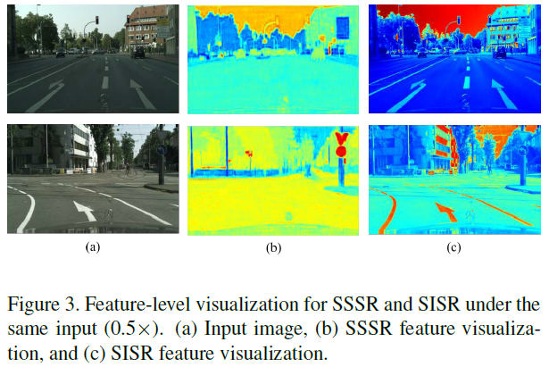
Feature Affinity Learning.
由于SISR比SSSR包含更完整的结构信息，因此引入特征相似性学习（FA）来指导SSSR学习高分辨率表示。 如公式1所示，FA旨在学习SISR和SSSR分支之间的相似度矩阵的距离。
其中，如公式2所示，相似度矩阵主要描述像素之间的成对关系。$S_{ij}$表示特征图F上第i个像素和第j个像素之间的关系，相当于是代表了特征图像素之间的关系，即结构信息。
实施细节：由于高内存开销，损失在原图输入的1/8特征图上计算FA距离。 此外，为了减少由SISR和SSSR分支之间的特征分布差异引起的训练不稳定性，在应用FA损失之前在SSSR分支的特征图上附加了一个特征变换模块，该模型由1×1卷积组成 层，然后是BatchNorm和ReLU层。
Optimization
总损失由SSSR语义分割预测的交叉熵损失CE，SISR图像重建误差MSE和特征相似性FA距离组成。其中，CE与MSE公式如下：
Experiments for Semantic Segmentation
Dataset
CityScapes:专注于城市视觉场景理解，包括2975个训练图像，500个验证图像和1525个带有细粒度注释的测试图像。它在不同的季节在50个城市被捕获。任务是将图像分割为19个类。所有图像的分辨率为1024×2048。文章工作者在其验证集上执行详细的比较实验，并使用线上服务器在测试集上报告最终结果。
CamVid：是另一个汽车数据集。有11个有效的不同的类。该数据集的原始帧分辨率为960×720。这篇工作评估了11个类的验证和测试集的性能。
在两个数据集的语义分割中，都采用了平均交比并的常用度量方法，文章也介绍了分割模型的FLOPs，以比较它们的计算成本。
Ablation Study
Effect of algorithmic components
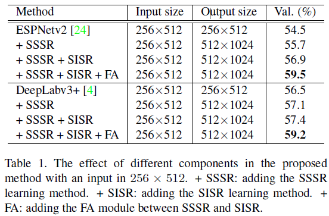
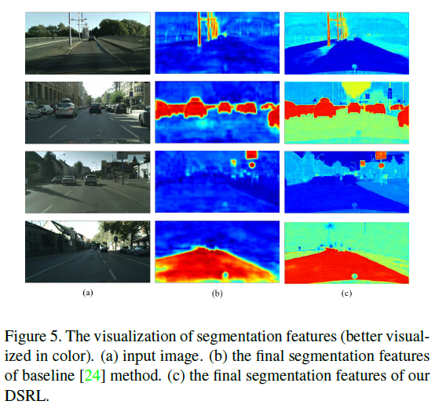
Effect of various input resolutions
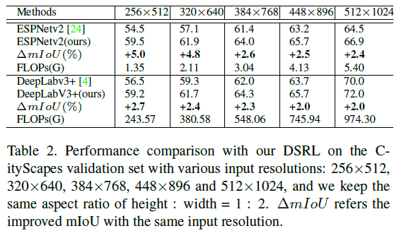
Results on CityScapes
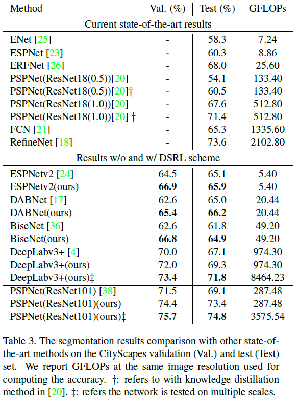
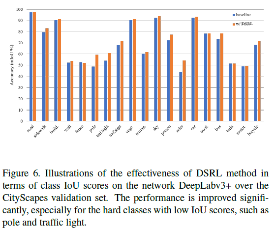
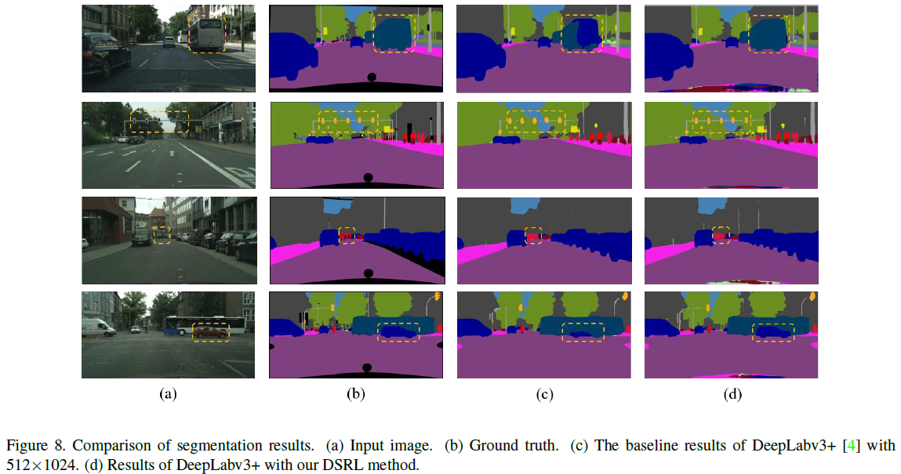
Results on CamVid
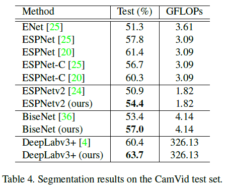
Results for Single Image Super-Resolution
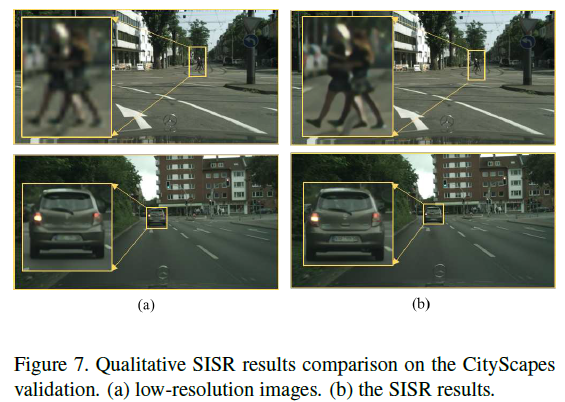
DSRL for Human Pose Estimation
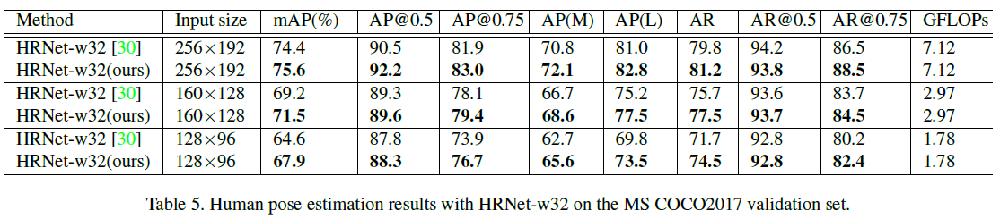
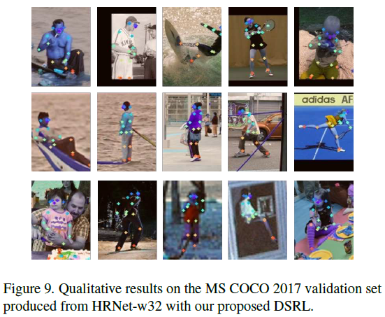
Conclusion
这项工作提出了一个双重超分辨学习框架的语义分割。语义分割超分辨率(SSSR)分支有助于学习高密度标记预测的高分辨率表示,单一图像超分辨率(SISR)分支可以恢复结构的详细信息,特征关联模块（FA）被引入来，通过结合详细的结构信息提高了高分辨率表示的语义分割。